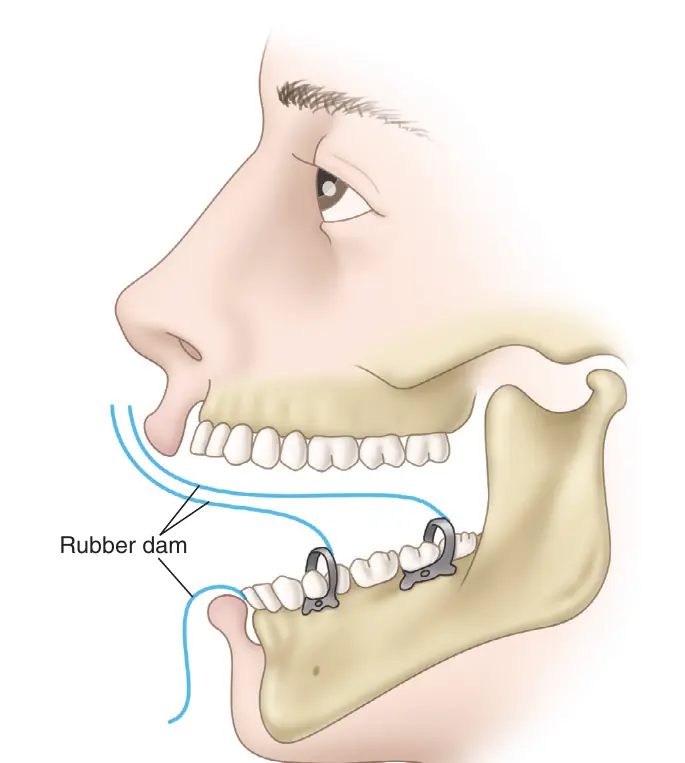
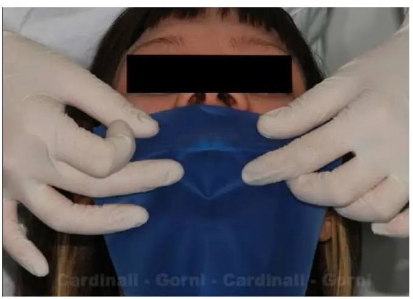

نسخه استخراجشده؛ ترجمه یا تأیید علمی انجام نشده است. وضعیت: captured
دانشجو برای ترمیم ثنایای میانی بالا، سوراخها را خیلی نزدیک لبهی بالای ورق زد. پس از گذاشتن رابردم، لب بالای بیمار بیرون ورق ماند و ورق بهزور روی فریم رسید. سوراخ ثنایا باید کجا باشد؟

سوراخها را طبق شکل قوس بیمار بزن و جای دندان چرخیده یا جابهجا را تنظیم کن. برای دندان غایب سوراخ نزن. دستیار بهتر است پیش از پانچ، شکل قوس و ردیف دندانها را ببیند.
هرچه لنگر پایین دیستالتر باشد، ورق بیشتری باید از پشت کلمپ تا روی لب بالا برسد.
ورقی که به دهان خورده به بزاق آلوده است؛ پانچی که با آن کار کرده را استریل کن.

فاصلهی دو سوراخ برابر فاصلهی مرکز یک دندان تا مرکز دندان کناری، در سطح لثه است. با این فاصله ورق پاپیلای بیندندانی را میپوشاند و کمی کنار میزند.
اشتباه رایج: سوراخ خیلی نزدیک به لبهی ورق. ورق روی فریم کشیده نمیشود، یا آنقدر کش میآید که سیل دور دندان از دست میرود.